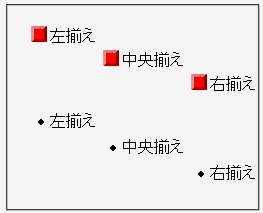
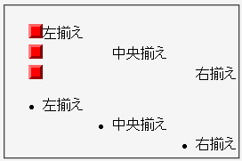

グリフタイプのリストマーカーはtext-alignプロパティの指定に従って内容物の先頭の左隣に置かれるが、画像のリストマーカーはtext-alignプロパティの指定に関わらずボックス左端に置かれる。
<ul style="list-style-image:url(../img/img02.png);"> <li style="text-align:left;">左揃え</li> <li style="text-align:center;">中央揃え</li> <li style="text-align:right;">右揃え</li> </ul> <ul style="list-style-type:disc;"> <li style="text-align:left;">左揃え</li> <li style="text-align:center;">中央揃え</li> <li style="text-align:right;">右揃え</li> </ul>
2つのリストがあります。前者は画像リストマーカー、後者はグリフリストマーカーを使用しています。
Opera6.06での表示
Opera7.11での表示
Opera7.11標準モード、Opera7.11互換モードで不具合の発生が確認されました。